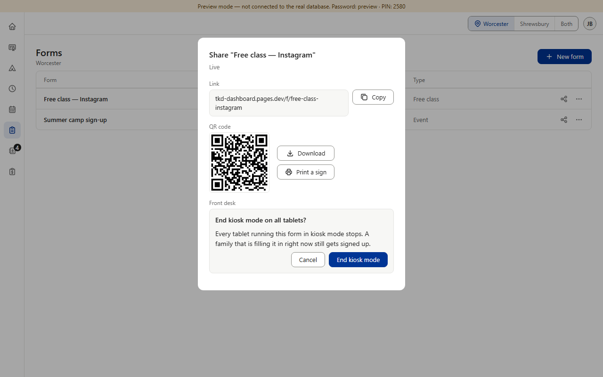
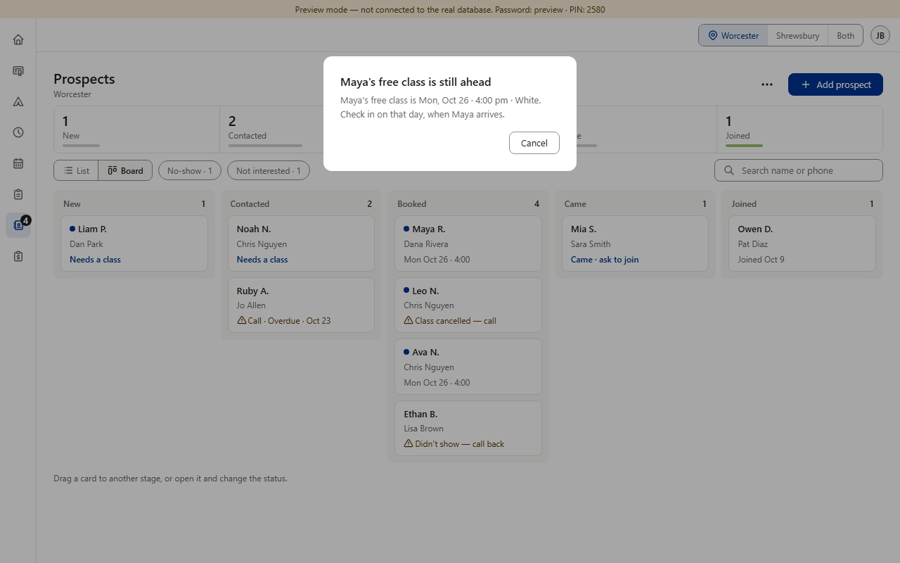
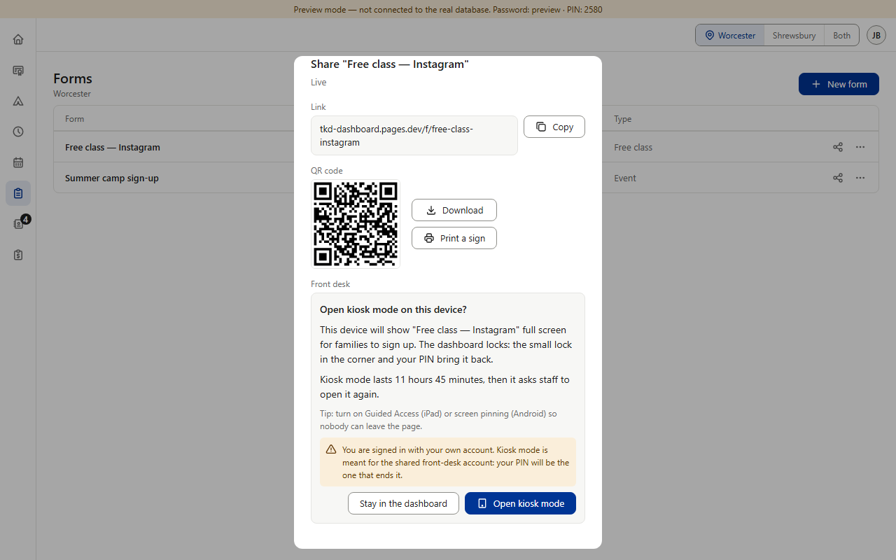
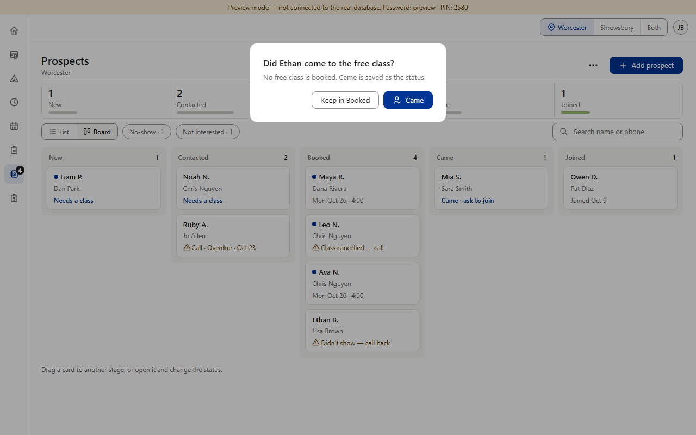
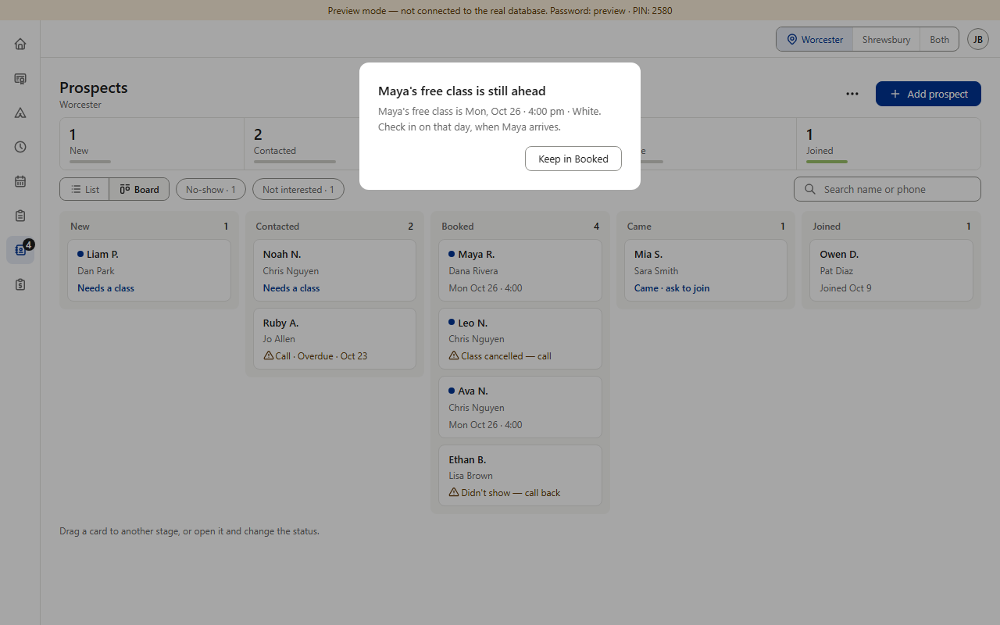

From item 8; for Main's shared confirm box. Item 8 made the button that changes nothing say what stays (“Keep payment”, “Keep student” …). Four asks lose nothing even if the action goes ahead, so item 8 didn't settle them: Forms' “Open kiosk mode on this device?” and “End kiosk mode on all tablets?”, and Prospects' box when a Board card is dropped on Came (“Did … come to the free class?”, or “… 's free class is still ahead” before the class day). All four say “Cancel”. Two can be misread: next to “End kiosk mode”, “Cancel” can read as “cancel kiosk mode” — the same as the action; under “Maya's free class is Mon, Oct 26”, a lone “Cancel” can read as “cancel her class” (Prospects also has a real “Cancel booking” button). On phones Prospects' Came box shows only “Came” (the back arrow closes it). (Preview screenshots · PC size · fake data)




